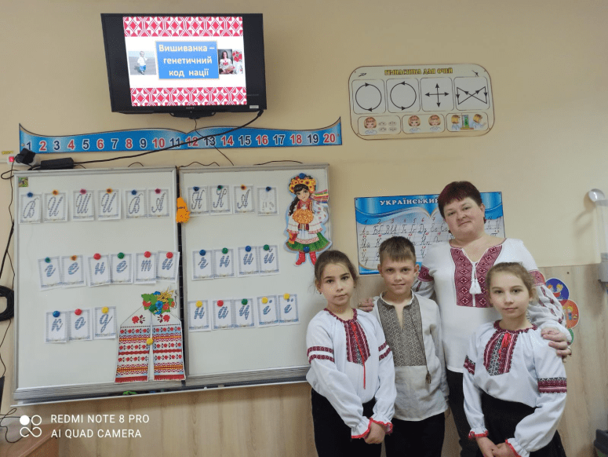
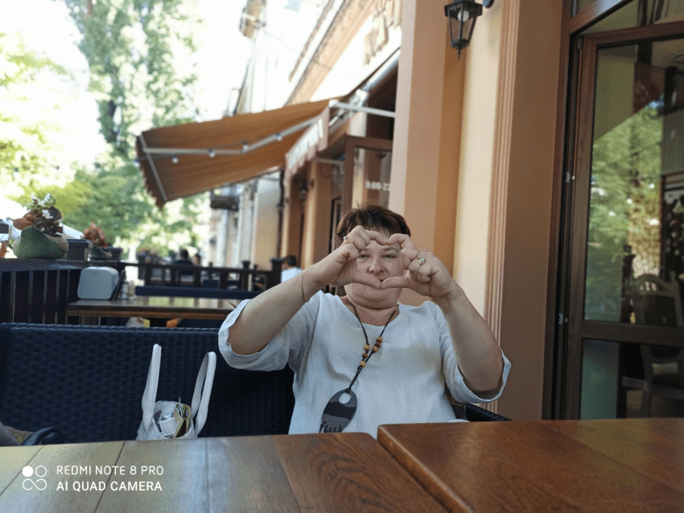

пошта":test@test.test
телефон:+3801234567
пошта":test@test.test
телефон:+3801234567
Нечахіна Валентина Василівна
Вчитель початкових класів вищої категорії, старший вчитель.
Я-вічна школярка, жінка і мати ... У школі я-вчитель, наставник і друг. Люблю вишивати і бешкетувати... Зробити все кращим навкруг.
Перше вересня донечки.
Робота з дітьми
 